Após mais uma célebre peixada, tinham ido dormir cedo porque na manhã seguinte seria a volta a São Paulo. Haviam aproveitado o dia o melhor possível, encerrando com chave de ouro a excursão.
Iberê, que comera mais do que nunca, e que não estava com o sono muito tranquilo, foi acordado por um barulho estranho, um zunido muito forte que durou uns instantes. Depois silencia completo. Procurou escutar e ouviu vozes. Falavam uma língua esquisita. Novo silêncio. Não resistiu e levantou-se cautelosamente a fim de não despertar o Arrelia, Sérgio e Carlinhos, que dormiam no mesmo quarto. Vestiu-se e dirigiu-se à porta do hotel. Estava apenas encostada. Abriu-a com cuidado, saiu e tornou a encostá-la. Calculou onde ficava a janela de seu quarto e foi para lá. Era defronte de um campo em que havia algumas árvores.
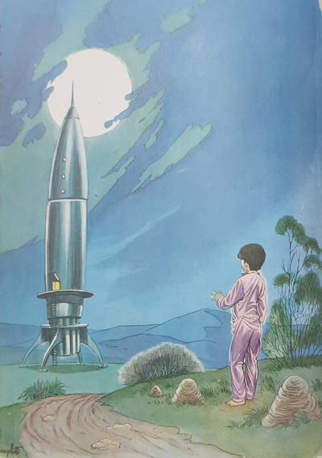
Não vendo nada de diferente, resolveu voltar. Mas aquele zunido, aquelas vozes estranhas tinham-no impressionado. Ouvira tudo distintamente, com tal clareza que não deixava dúvida. Seria um assalto ao hotel? E os assaltantes? Tinham sumido! Iberê resolveu investigar melhor. Entrou no campo. Foi passando pelas árvores. Nada. De repente . . . O que era aquilo? Brilhando ao luar, um enorme aparelho projetava-se do solo: um foguete interplanetário! O coração do menino disparou. Quis ir buscar os outros, porém logo mudou de ideia. E se o foguete não estivesse mais ali quando chegassem? Resolveu observar melhor. Jamais haveria outra oportunidade. Foi-se aproximando. Notou que uma escada descia da porta do aparelho. E a porta estava aberta! Que tentação! Pôs-se a admirá-lo. Um belo aparelho. Todo cor de prata, apontando para as estrelas . . .
O que faria ali aquele aparelho? “São seres de outro planeta!” – pensou o menino. “Devem estar andando por aí e deixaram o foguete abandonado. Logo voltarão para partir. Se eu conseguisse entrar e destruir os comandos, não poderiam fugir. Acho que eu sairia em todos os jornais!”
Durante algum tempo, o menino ficou ali parado, indeciso. Entraria ou não? E se os tripulantes chegassem de repente? Não era melhor voltar para o hotel?
Finalmente, o desejo de Aventura apossou-se dele. Seria ligeiro. Entraria no foguete, destruiria os comandos e iria buscar o pessoal. Já estava vendo a cara do Arrelia: “Você fez isso? Que menino corajoso! Um viva para ele!” E as outras crianças? Ficariam de olhos arregalados, espantadas.
Iberê correu até ao foguete. Olhou em volta antes de subir. Não viu ninguém. Subiu a escada e entrou. Começou a suar. E se houvesse alguém lá dentro? Que loucura estava ele fazendo? Olhou rapidamente por todos os cantos. Não, não havia ninguém. Percebeu que se encontrava numa enorme sala, bem iluminada, na qual os instrumentos mais complexos estavam instalados. De que modo iria destruí-los? Se tivesse um martelo, um ferro qualquer . . . Procurou mas não encontrou nada. Não podia esperar mais. Desesperado, começou a bulir em alavancas, na esperança de arrancá-las. Luzes de diversas cores acenderam-se e começaram a piscar. A porta fechou-se com estrépito, o foguete estremeceu e partiu. Iberê, que havia caído, com muito esforço conseguiu sentar-se numa das grandes cadeiras colocadas diante de uma enorme vidraça. Olhou para ver se ainda avistava o hotel e ficou surpreso. Viu apenas uma bola enorme que se distanciava rapidamente. Era a Terra. Jamais havia pensado que um aparelho pudesse viajar com tanta velocidade!
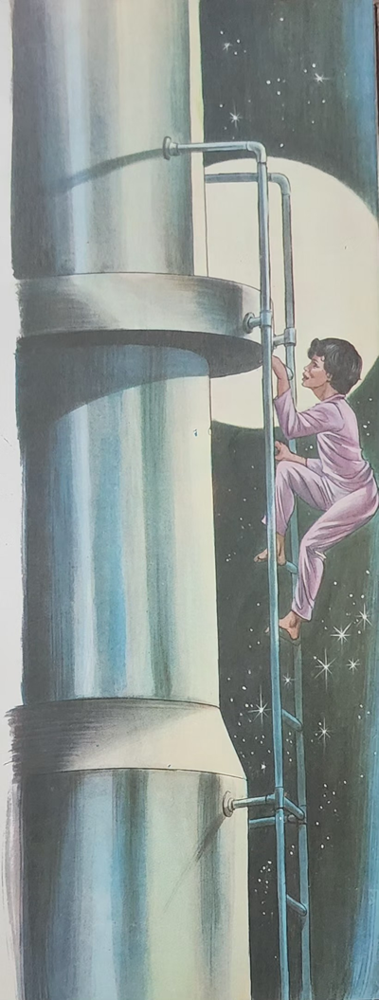
O desespero tomou conta do menino. Chamou por todas as pessoas que conhecia. Tinha certeza de que estava perdido. Era só esperar o fim. Fechou os olhos. Ao abri-los de novo, percebeu que o foguete havia parado. Viu que a porta estava aberta e correu para ela. Encontrou a escada já descida e não esperou. Que lugar seria aquele? A Lua não era, pois não tinha nada do que ele vira nas fotografias. O solo do lugar em que ele estava era negro, brilhante, e repleto de cavernas. Tinha caverna por todos os lados. O interessante é que as estrelas estavam tão perto que não encontrava dificuldade em enxergar.
Criando nova coragem, Iberê resolveu percorrer o lugar. Queria descobrir o que era aquilo. Já que estava perdido . . . Voltar à Terra é que ele não ia saber. Portanto . . .
Pôs-se a caminhar. Cavernas e mais cavernas. Não tinha outra coisa. Já estava perto de desistir quando ouviu uma voz de criança:
- Menino! Não vá embora! Espere!
Iberê procurou ouvir de onde vinha a voz. Seria possível? Uma criança naquele lugar! E falando a mesma língua! Estaria sonhando? Olhando para todos os lados, viu que realmente alguém corria ao seu encontro. Era um menino! Iberê parou. O menino aproximou-se dele e quis saber:
- Você também está perdido neste asteroide?
- - Então isto é um asteroide?
- Não sabia? Ele é Feito de diamantes!
- Diamantes?
Os olhos de Iberê iluminaram-se.
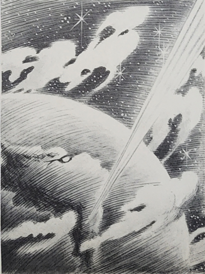
- Sim, diamantes – confirmou o outro.
- Você mora aqui? Qual é o seu nome? – perguntou Iberê.
- Estou aqui há alguns dias e chamo-me Ricardinho.
- E como foi que veio parar aqui? Está sozinho?
- Já vou contar como foi que vim ter aqui. E não estou sozinho.
Há mais duas meninas comigo. Estão escondidas na caverna. Fomos raptadas na Terra e trazidos para cá.
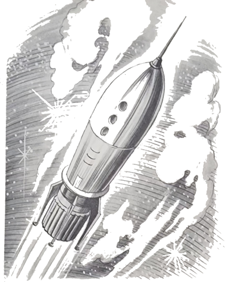
- Raptados? E por quem?
- Pelos fazedores de seres mitológicos.
- Como é? Não estou entendendo nada!
- Vou explicar. Neste asteroide vivem três vultos.
- Vultos?
- Isso mesmo. São três sombras que falam uma língua muito esquisita mas que a gente consegue aprender em poucos dias. Pois eles são fabricantes de duendes, de seres mitológicos. Com o próprio diamante daqui eles criam curupiras, iaras, sacis, e não sei p que mais. São guardados em cavernas e depois levados para a Terra num grande foguete.
- Talvez seja o foguete em que viajei!
- Não sei. Segundo pude compreender, pretendem trazer muitas crianças da Terra para serem transformadas em duendes diferentes, pois estão cansados de usar diamante.
Iberê ficou apreensivo. Seus companheiros corriam perigo. Já sabia por que os estranhos seres estavam vigiando o hotel. Queriam raptar as crianças! Ainda bem que ele havia conseguido tirar-lhes o foguete! Ah se pudesse voltar!
- Quer ir à nossa caverna? – perguntou Ricardinho, acendendo um farolete que levava consigo. Não é que eu havia esquecido de acendê-lo?
- Para que acendeu esse farolete se está claro e a gente enxerga bem? – quis saber Iberê, coçando a cabeça.
O outro menino surpreendeu-se:
- E o que vou fazer com o farolete? Ele só serve para iluminar, não é?
Seguiram os dois para a caverna. Na entrada estavam duas meninas.
- Esta é a Katy e esse á Selma – disse Ricardinho.
Os quatro entraram e sentaram-se no chão. Ricardinho continuava com seu farolete ligado, embora o interior da caverna fosse tão claro como lá fora.
- Ouçam! – pediu Iberê. O foguete em que vim poderia levar-nos de volta. O mal é que não sei dirigi-lo. Cheguei aqui por acaso. Por certo vocês também vieram nele. Será que não observaram o seu funcionamento?
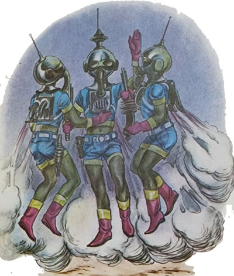
- Eu não, pois dormi durante toda a viagem – respondeu Katy.
A outra menina também disse a mesma coisa.
- Olhe. Se é o mesmo foguete em que viemos, sei mais ou menos como é dirigido, pois observei os três vultos o tempo todo – esclareceu Ricardinho, desligando a lanterna elétrica “para economizar”.
- Pois vamos até ao foguete para ver se é o mesmo – disse Iberê.
Os dois saíram correndo, acompanhados de longe pelas meninas, que não conseguiram alcançá-los. Ricardinho acendeu outra vez o seu farolete e apontou-o para a enorme espaçonave apesar de estar perfeitamente nítida.
- É esse o foguete! É ele mesmo! – exclamou Ricardinho.
- Então Podemos arriscar – disse Iberê. Onde estão as meninas?
Vinham chegando. Sentaram-se no chão. Estavam cansadas. Não tinha sido brincadeira.
- Olhe! Vou pegar uns pedaços de diamante e iremos embora, está certo? – disse Iberê ao outro menino.
- Está certo – concordou ele. Enquanto isso, vou voltar à caverna para pegar meu chapéu, que esqueci de trazer.
Iberê surpreendeu-se:
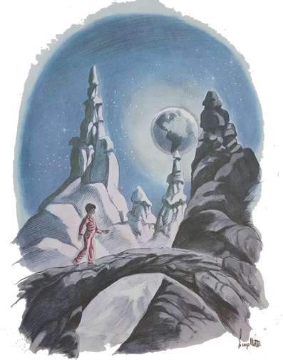
- Você vai voltar por causa de um chapéu?
O menino não ouviu, pois já ia longe com seu farolete ligado. Foi Katy quem respondeu:
- Ele não larga aquele chapéu de jeito nenhum. Não sei como foi esquecê-lo!
Iberê começou a pegar punhados de diamantes e a levá-los para o foguete. Um canto da sala de comando ficou tomado pelas pedras. Iberê não conseguira parar. Queria mais e mais. Foi quando Ricardinho voltou. Entraram todos. Iberê apontou com orgulho para o seu tesouro:
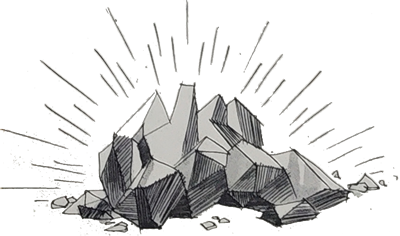
- Olhem! Estou rico! Vejam que maravilha!
- Acho que com esse peso o foguete não vai sair do chão – disse Ricardinho, guardando a lanterna no bolso.
- É claro que sai! – afirmou Iberê. Este foguete é possante.
Eu também quero alguns diamantes – resolveu Selma.
Ricardinho e Katy também se decidiram.
- Só se vocês forem buscar! Estes são meus! – gritou Iberê pondo-se à frente de seu tesouro.
As outras três crianças começaram também a ir buscar diamantes e a formar os seus montes. Quando terminaram, Iberê comentou:
- Agora é capaz que o foguete não saia mesmo. Para que tanto egoísmo?
- Que lindo! – exclamou Ricardinho. Você pode e nós não podemos, não é? Por quê?
As duas meninas também se insurgiram contra Iberê.
- Para acabar com a discussão, ninguém leva. Está certo? – propôs Ricardinho.
Não era Iberê que ia desistir daquele tesouro.
- Está bem. Fica como está – concordou ele. Prefiro não sair daqui a deixar os meus diamantes.
Prepararam-se todos para partir. Os dois meninos assumiram os comandos. Buliram aqui, apertaram ali, o foguete tremeu, pensaram que fosse tombar mas finalmente partiu.
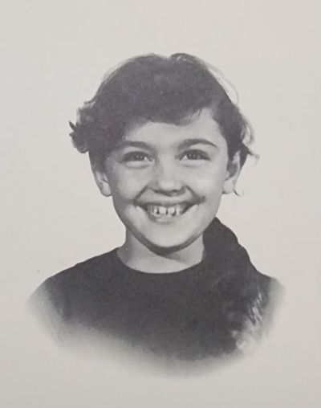
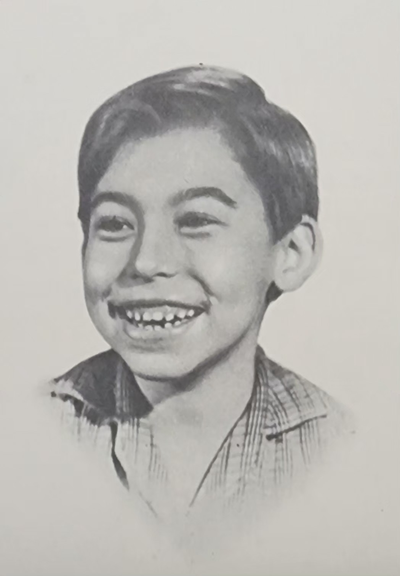
- Ele está bem mais lento do que quando vim – disse Iberê com ar preocupado.
- São os diamantes – respondeu o outro. Está com muito peso.
- Você sabe a direção da Terra?
- Eu não! Pensei que você soubesse! Agora é que vai ser!
As meninas ouviram a conversa e começaram a chorar.
- Calma! – pediu Iberê. Chegaremos lá! Vocês Vão ver.
Passado algum tempo, uma esfera luminosa surgiu no espaço.
- Veja! – gritou Ricardinho. É a Terra!
- Não tem dúvida! É a Terra! – confirmou Iberê, e todos começaram a gritar de alegria.
Mas o foguete cada vez ficava mais lento.
- Está quase parando – disse Iberê. Assim não chegaremos lá. Acho que o combustível está-se acabando. O que faremos?
Novamente as meninas começaram a chorar.
- Tive uma ideia! – gritou Ricardinho. E se usássemos os diamantes como combustível?
Iberê discordou. Os diamantes não! E quem podia garantir que daria certo?
- De qualquer modo estaremos perdidos – refletiu Ricardinho. Portanto, não custa tentar.
Após muita busca, localizaram um compartimento que devia ser o depósito de combustível. Para ninguém sair prejudicado, jogaram um pouco de diamantes de cada monte. Depois outro e outro. Deu certo! A espaçonave começou a ganhar velocidade. Continuaram a jogar. Os montes foram diminuindo rapidamente. Já restavam poucas pedras.
- Chega! Chega! – pediu Iberê. Chega ou vamos ficar sem nada!
- Deve ser suficiente – disse o outro. A Terra está bem perto.
Os quatro olhavam pelo vidro ansiosamente. Mais um pouco e estariam pousando. E saberiam pousar? E em que lugar da Terra desceriam? Recomeçaram a manejar os instrumentos.
- Ali é a África! – gritou Iberê. Vamos virar para cá! Mais! Olhe! É a América do Sul! Agora estamos no caminho certo!
Puxavam alavancas e apertavam botões sofregamente. O foguete foi perdendo velocidade pouco a pouco e pousou na Terra. Tinham chegado! Pularam, abraçaram-se, riram. Aí surgiu a dúvida: teriam pousado pelo menos no Brasil? Iberê olhou pelo vidro. Não podia ser! Sorte assim nunca mais! Ali estava o hotel! O foguete descera exatamente no mesmo lugar!
- Vamos sair – comandou Iberê. Antes, porém, precisamos apanhar os poucos diamantes que restaram.
- Ainda tem bastante, respondeu Ricardinho, colocando as pedras preciosas no chapéu.
Iberê encheu todos os bolsos de sua roupa. As meninas arrepanharam a saia e ali depositaram os seus diamantes. Já iam saindo quando Iberê se lembrou:
- Precisamos destruir os comandos para que os três vultos não fujam nem roubem mais crianças!
Procurou no bolso o maior diamante, e com ele pôs-se a quebrar os instrumentos. Bem pouco sobrou.
Iberê desceu na frente. Olhou em redor para ver se os três vultos não estavam por perto. Não percebeu nada, fez sinal às outras crianças e elas desceram. Ricardinho ia acender o seu farolete quando Iberê interveio com toda a rapidez possível:
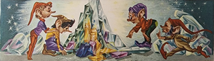
- Não acenda essa lanterna! Poderá chamar a atenção deles!
- É mesmo! – concordou o menino. Eu não havia pensado nisso!
- Vamos com Cuidado avisar o Arrelia! Ainda deve estar dormindo! Acho que nem deu pela minha falta!
Pé ante pé, todos eles foram-se aproximando do hotel. Não faltava muito para chegarem quando Iberê sussurrou:
- Cuidado! A porta está-se abrindo! Escondam-se! Receio que sejam os habitantes daquele asteroide!
Correram para trás das árvores e ficaram atentos. Um vulto estranho saiu do hotel.
- É um deles! – avisou Ricardinho.
O vulto observou todos os lados, fez um gesto, e logo saíram mais dois sobraçando não se sabia o quê.
- São os outros dois! – gritou Katy.
- Silêncio! – pediu Iberê. Quer que nos descubram?
Ficaram ali, quietos, esperando que as sombras passassem. Aí Iberê teve a maior das surpresas. Distinguiu o que os dois vultos estavam carregando. Eram os seus companheiros! Os dois vultos carregavam em cada braço uma das crianças: Jaci, Marisa, Sérgio e Carlinhos. Pareciam uns pacotes, tão amarrados e amordaçados estavam. Era o máximo para Iberê. Não encontrando coisa melhor, apanhou novamente o mesmo diamante que usara para quebrar os instrumentos e correu para enfrentar os raptores. Apanhados de surpresa, largaram as crianças a fim de enfrentarem o menino. Iberê estava furioso. Rodava, pulava e acertava com a pedra ora um vulto, ora outro.
Eles pareciam receosos e mesmo dispostos a fugir. Um deles, porém, acabou por notar o diamante na mão de Iberê e falou qualquer coisa aos outros. Já sabiam que o menino estivera no asteroide e surrupiara os seus diamantes. Enfureceram-se. Iberê perdeu um pouco de sua energia inicial e gritou por socorro. Ricardinho atendeu e entrou na luta, usando seu farolete como se fosse uma clava. Foi quando surgiu outra surpresa: cada vez que um vulto era agora atingido, ele se desdobrava em outro. Assim, logo havia um batalhão de sombras. Era demais. Iberê viu que não tinha mais forças. Seu braço mal se levantava. Lembrou-se do Arrelia. Se ele acudisse com sua bengala, por certo conseguiriam vencer. Bastava que os vultos vissem aquele porrete para saírem correndo. Começou a gritar: “Arrelia! Depressa, Arrelia! Socorro! Traga a bengala!”
Num golpe de mágica o Arrelia apareceu:
- Você está louco? O que aconteceu? Acorde!
- Depressa! Os vultos vão levar os outros para o foguete! Quebrei os instrumentos, e eles não podem fugir! Mas poderão vingar-se nas crianças!
- Que crianças? A Jaci e a Marisa estão dormindo em companhia da dona do hotel. Carlinhos e Sérgio estão roncando ali, olhe. E que foguete pode haver neste lugar? Só se for uma canoa voadora. Você teve um pesadelo!
- Mas eu estava batendo nos vultos do asteroide! Tenho certeza.
- Batendo nos vultos, é? Você bateu foi no meu estômago! Levei cada “pancauda” . . .
- Não é possível! Tenho certeza de que aconteceu! Onde estão os diamantes?
- Você só pode ter Certeza de uma coisa: comeu mais peixe do que devia e pagou “cauro”. Vamos dormir outra vez que logo cedo iremos embora.
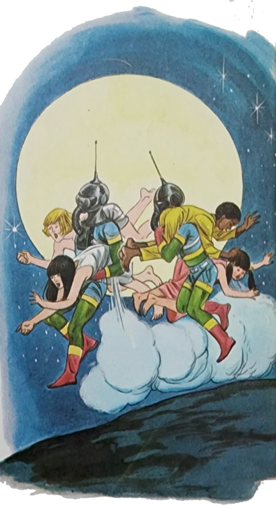